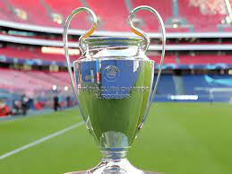
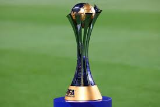

La Liga
It is the first division championship of Spain, which has been played since 1929. Barça has won it 27 times, being the second club with the most leagues, only behind Real Madrid. The last time they won it was in the 2018-19 season.

Champions League
It is the most prestigious club tournament in Europe, which has been played since 1955. Barça has won it 5 times, being the fifth club with the most cups. The last time they won it was in the 2014-15 season.
The Club World Cup
It is the tournament that faces the continental champions of each confederation, which has been played since 2000. Barça has won it 3 times, being the second club with the most world cups, only behind Real Madrid. The last time they won it was in the 2015-16 season.
